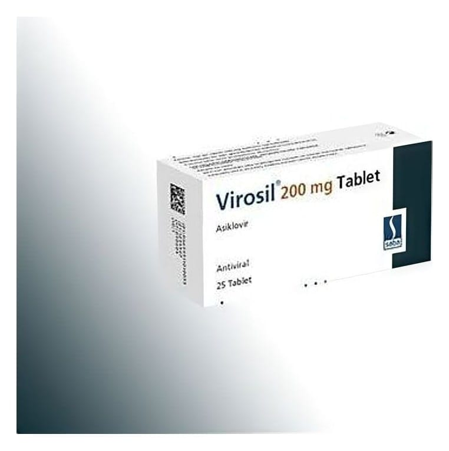

Virosil 200 mg 25 Tablet

Ne için kullanılır
KT · Bölüm 1VİROSİL, Herpes simplex virüs (HSV) tip 1 ve 2 virüslere karşı etkili antiviral bir ilaçtır.
VİROSİL etken madde olarak asiklovir içerir ve 25 tabletlik blisterlerde sunulmaktadır. VİROSİL, deri enfeksiyonlarında (uçuk), suçiçeğinde, zonada (Sinir iltihabına bağlı ağrılı bir deri hastalığı), AIDS ve kemik iliği naklini takiben ciddi bağışıklık sistemi yetersizliği olan hastaların tedavisinde kullanılır.